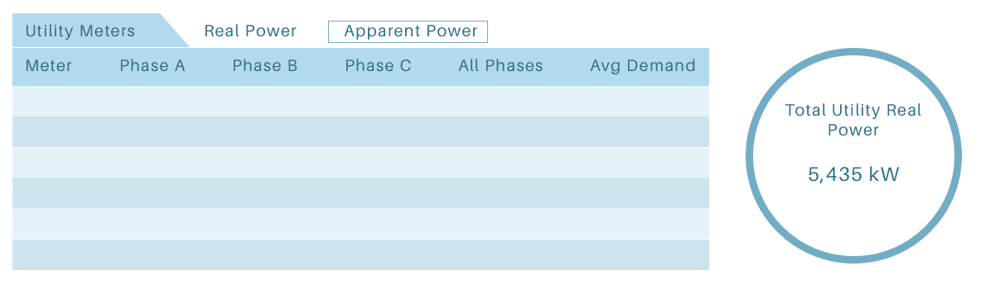

Vista Water Plant UI
UX Design | Desktop
About Controlco
Controlco integrates systems for centralized building automation controls. They are a B2B company specializing in IoT products that lets users see trending data and operate their facilities. These products are in-browser applications where users can log in to access their building's innerworkings. Controlco serves corporations that own malls, high-rises, and data centers.
Project Overview
The City of Pleasant Hill reached out to Controlco's CEO to request a desktop UI that would visualize the water plant's data and activity. The tool would also allow the plant workers to control certain settings of the plant, if manual configuration was needed. The UI would be in the form of a single webpage displaying plant graphics and settings, but can only be accessed after logging into the hosted server.
I collaborated closely with our CEO to define the requirements for the page. The customers provided us with a checklist of data points that they wanted to see.

The Challenge
Our users are used to seeing both real power and apparent power, kW and kVA respectively, for every point. However, they also sectioned these points into three phases, which meant there would be hundreds of points to show. The biggest challenge was coming up with a concept to show all of this data without the clutter. I felt that it wasn't a good idea to show both kW and kVA at once because it was just simply unnecessary. The engineers claimed that they needed all of these points present at first glance, but I felt that I could come up with a solution to keep it clean.
Methods
I worked closely with my VP of Ops for this project, communicating my idea about showing kW and kVA separately. While he said that the field engineers prefer seeing both units of electrical power, he trusted my instinct to try out a different concept anyway. I created a simple wireframe of a single table.
An example of what the table looks like for each unit
The data center contains a few power units: power distribution units (PDU), uninterruptible power supplies (UPS), and distribution panels. There are several of each unit, and they also contain phases of electrical power (A,B,C). The users wanted to see a live average as well as a total sum of all units. I met these requirements but also improved the interface from the previous energy summary pages in the following ways:
- Each row would be a different color to make it easier to track
- The sum appears on the right as its own entity because it is the most important value on the page.
- I created a toggle to switch between kW and kVA

The toggle I created to reduce the amount of points a user sees at once


I chose a dark palette to match the rest of the website

I chose a dark palette to match the rest of the website
Process


The Results
I went on to build the dashboard after getting the final approval. It turns out that the users were fine with a toggle to show the units of power separately. They understood that it wasn't user-friendly to have all that data appear at once, but it was just something they were used to. I created the toggle with a smooth transition between the values so that way it wasn't disorienting for users. This feature was implemented in the rest of the Infomart data centers that we've integrated, with minor tweaks to each campus.